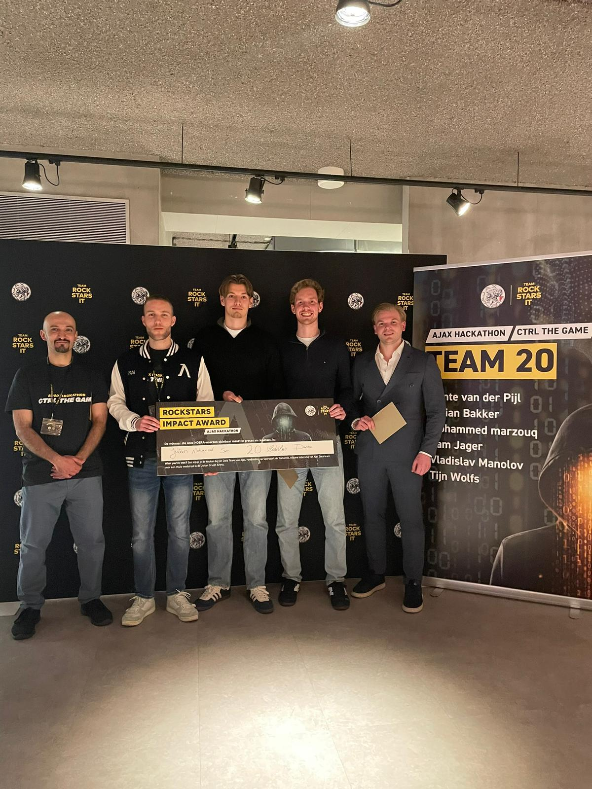
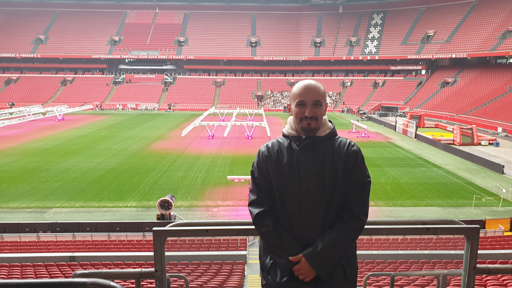
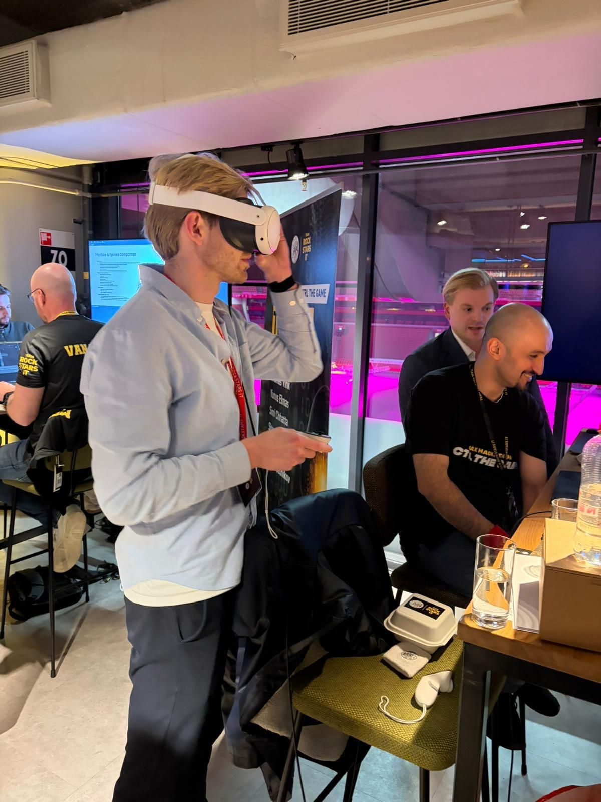
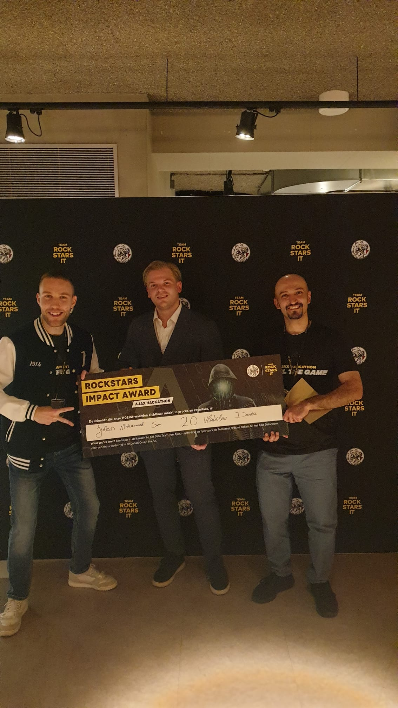

AFC Ajax Hackathon — Real-Time 3D Tracking & VR Simulation




Awarded 1st Place — Rockstars Impact Award at the official AFC Ajax & Team Rockstars IT Hackathon (CTRL THE GAME) in March 2026, competing against ~200 developers across 24 teams inside the Johan Cruyff ArenA in Amsterdam. While most analytics teams built conventional 2D dashboards and heatmaps, I architected a real-time Unity (C#) 3D telemetry and Virtual Reality match simulation engine that ingested Ajax's official 21-point skeletal tracking dataset and placed coaches and judges directly onto the pitch in first-person VR.
The Challenge
Modern football clubs capture high-frequency optical and skeletal tracking feeds—21 three-dimensional joint coordinates per athlete streamed dozens of times per second—yet tactical staff still review that spatial data primarily on flat 2D screens. Turning raw skeletal coordinates into a smooth, interactive 3D simulation normally demands heavy enterprise broadcast pipelines. Under hackathon time constraints at the Johan Cruyff ArenA, we set out to prove that a lightweight, real-time Unity engine could reconstruct full-match skeletal telemetry into an immersive VR tactical environment.
Engineering & Architecture (Unity C# + 21-Point Skeletal Telemetry)
- High-Frequency Telemetry Ingestion: Built a custom C# data parser and frame-interpolation pipeline in Unity capable of ingesting Ajax's 21-point skeletal tracking streams across all 22 players and the ball in real time.
- Skeletal Rig Mapping & Kinematics: Mapped raw 3D joint positions and limb vectors onto rigged humanoid player avatars with sub-frame temporal smoothing so stride cadence, body orientation, head scanning, and goalkeeper posture remained biomechanically accurate.
- First-Person VR & Tactical Camera Modes: Enabled instant switching between a free-roaming bird's-eye tactical table and first-person VR perspectives—allowing coaches or analysts inside a Meta Quest headset to stand directly inside any player's or referee's field of view at any moment of the match.
- Spatial Match Intelligence: Rendered live spatial cues—passing lanes, defensive compactness, line-of-sight occlusion, and off-the-ball scanning angles—that are invisible on traditional 2D top-down pitch maps.
Outcome & Recognition
Instead of pitching slides, we placed the AFC Ajax data team and jury directly inside the VR headset on the virtual Johan Cruyff ArenA pitch. Experiencing tactical spacing and player decision-making from an athlete's exact eye level stood out across all 24 competing teams, earning Team 20 the Rockstars Impact Award and an invitation to visit the Ajax Data Team at Sportpark De Toekomst.